Hi, I'm Tasha!
I’m a UX Deigner who never gets bored with resolving multi-faceted problems and loves to influence others through technology and design. I am also Sociology major at Texas Woman’s University, a really cool mom, an amazing wife. In a nutshell, I’m Superhuman.
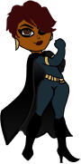MY JOURNEY INTO UX
I am the product of artists and thinkers. Growing up, I was always drawing, painting, and trying to figure out how my art could make someone else happy. I dabbled in photoshop and altered images, or created my own magazines, wrote poetry and always found myself navigating others through their problems, and some form of art was always at the end my guidance. I’ve always been creative and inquisitive, and these qualities folllowed me throughout life and lent themselves to my strong work ethic and passion for helping others.
With 10 years in Client Relations and my most recent endeavor as a Real Estate agent, I became heavily involved in photography and designing marketing products. Bloc introduced me to the world of UX and UI, the perfect union of creativity and thoughtfulness. This combination allows me to explore the many realms of visual creativity but also deliver an extraordinary experience for humans, where it actually matters.
MY DESIGN PHILOSOPHY
I believe that design solutions can benefit humanity on a global scale, through in depth reasearch and a deep understanding of humans. I want to create products that reach out and empower every culture, every disabilty, future generations and every kind of person. Like our minds, design has no limitations, only for now as well as for the future.
Though I enjoy research more than anything, I value the relationship with developers and technology experts. This relationship helps in the decision making during the design process as well as validating ideas and confirming the ability to deliver on time and on budget.
Lastly, simplicity. Everyone can appreciate the idea of simplicity, what intrigues me is that it can be more difficult to create something that is, simple. Simplicity creates experiences that allow the users to complete a task or accomplish goals in the easiest, most pleasant way. This can only be achieved by having a deep understanding of the users, knowing their needs and welcoming co-creation. I enjoy the challenge that UX offers,and I am continously striving to be a better designer in every moment.
WHEN IM NOT WORKING
I’m spending time researching random things and being loved and inspired by my beautiful family.
Meet my Tribe.
 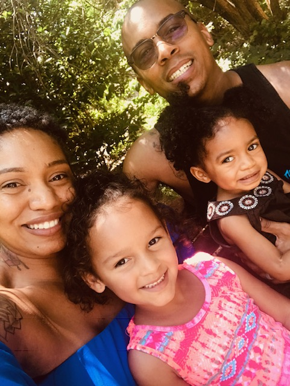
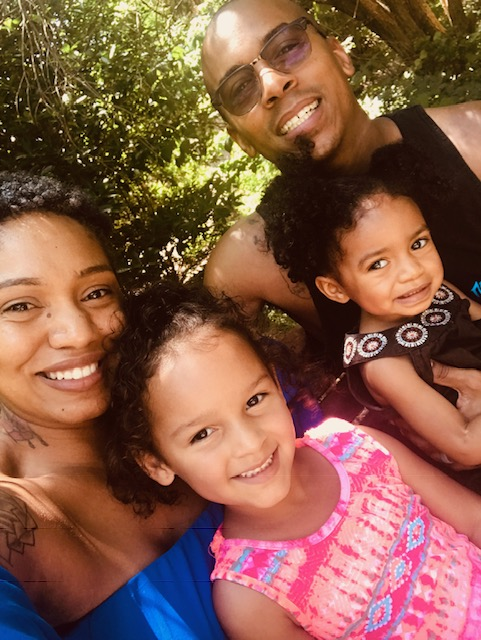


 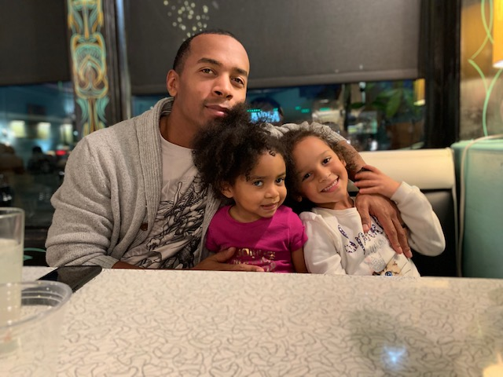
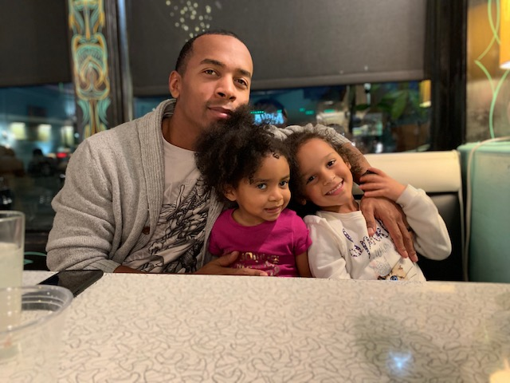
 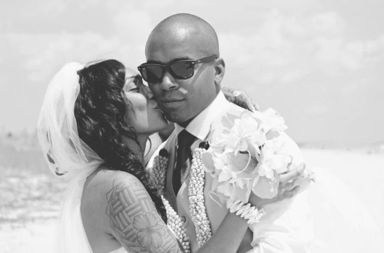
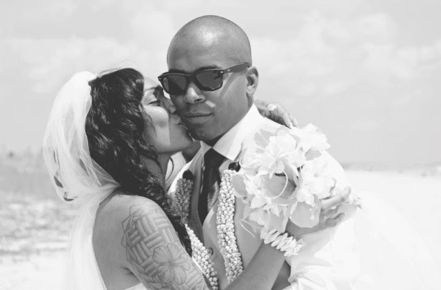
 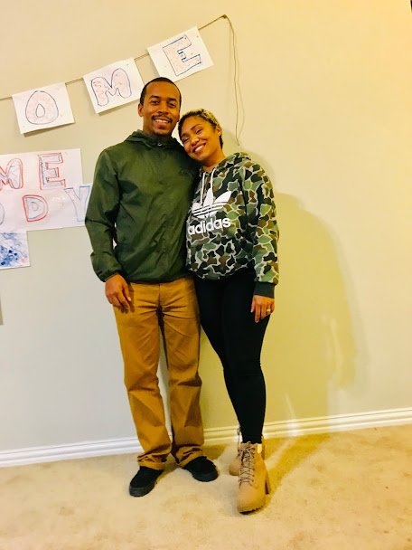
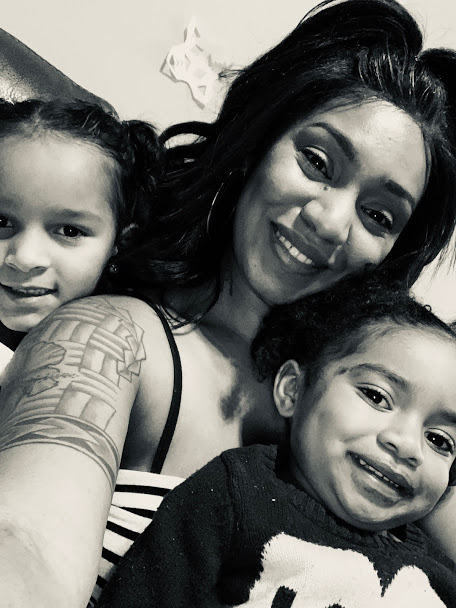
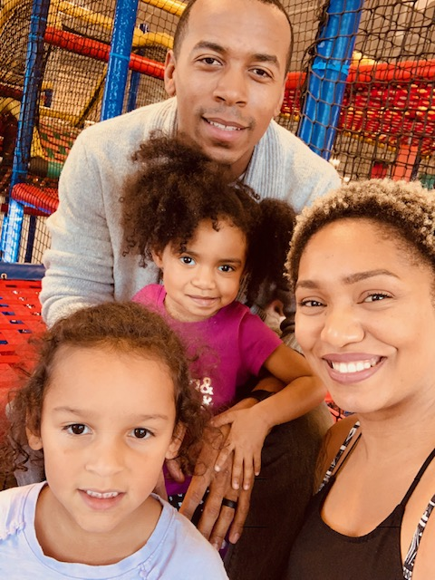
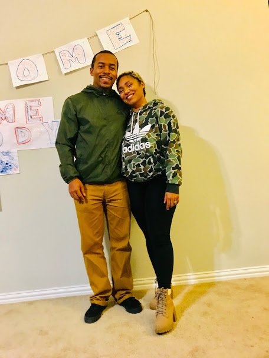
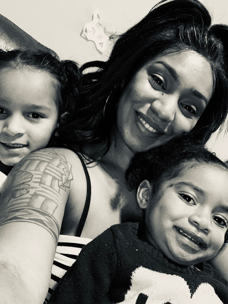
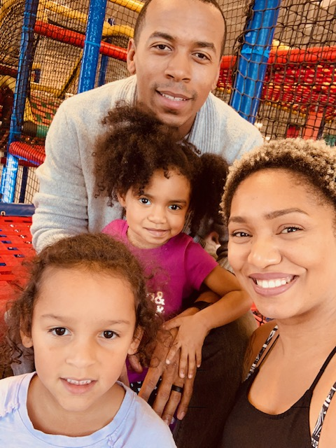

It was a pleasure telling you about myself. Now let’s talk about how I can help you with your next UX project. Feel free to connect with me here.